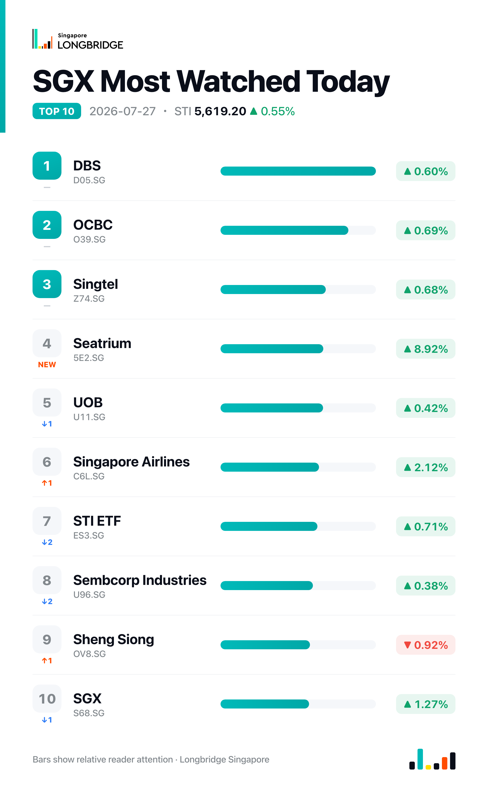

STI Hits Fresh Record High, Up 0.55% as Seatrium Surges and Property Rejoins the Rally
The Straits Times Index closed at a record 5,619.20 on Monday, up 0.55%, or 30.86 points, moving past the previous record close of 5,595.42 set on 22 July. The session traded in a 5,549.18-to-5,620.68 range, and the advance was broad: 18 of the index's 30 constituents finished higher, ten lower, and two unchanged.
Monday's gain marked a shift from the pattern of recent sessions. Property counters, which led Friday's declines with UOL Group down 3.09% and City Developments off 2.98%, reversed course to finish among the day's advancers, up 1.17% and 0.67% respectively. The three local banks — DBS, OCBC and UOB — extended their own rebound for a third straight session, adding between 0.42% and 0.69%, while the day's largest single move came from Seatrium, whose 8.92% surge outpaced the rest of the index by a wide margin. REIT counters were the exception to the broader advance, with CapitaLand Ascendas REIT, Frasers Centrepoint Trust, MPACT and Mapletree Logistics Trust all lower.
Session Movers
Seatrium (5E2.SG, +8.92%) was Monday's standout, after a same-day report that shares climbed on positive profit guidance ahead of its first-half 2026 results, due before market open on 31 July. That guidance follows the company's 24 July disclosure that it expects a material year-on-year rise in H1 net profit, driven by divestment gains and progressive margin improvement. The stock trades at 22.3 times earnings, cheaper than about 84% of its one-year range, against a Buy consensus implying roughly 18% upside.
Singapore Airlines (C6L.SG, +2.12%) advanced despite Changi Airport reporting a 1.5% year-on-year fall in second-quarter passenger traffic to 17.2 million, as weaker Southeast Asian routes were offset by a 9.8% surge in airfreight tonnage tied to AI-related semiconductor shipments. The gain also came after shareholders approved all resolutions at Friday's AGM, including the final and special dividends and a renewal of share buyback mandates, and as Australia's competition regulator proposed authorising the airline's alliance with All Nippon Airways. J.P. Morgan downgraded the stock to Hold on Friday, with a target implying about 10% downside.
SGX (S68.SG, +1.27%) rose after expanding its licensing agreement with MSCI to launch futures and options across a broader suite of global, regional and emerging-market indexes, adding to a deal announced last week covering up to 100 equity derivatives contracts. The exchange operator also launched SpaceX and Grab depositary receipts last week, part of a wider push to broaden its listings pipeline. The stock trades at 38.85 times earnings, cheaper than just about 2% of its five-year range, against a Hold consensus implying roughly 5% downside.
Thai Beverage (Y92.SG, -1.1%) was the session's lone notable decliner among Monday's movers, with no fresh company news to explain the drop. The stock remains in focus over reports that it is weighing a sale of its Thailand KFC franchise business, the country's largest with more than 500 outlets, as it works with Bank of America to gauge buyer interest following a decline in its food business profit in the first half. Consensus rating stays Buy, with a target implying about 12% upside.

One point worth noting
Monday's advance broke from the narrower pattern of recent sessions: Friday's -0.12% dip had left more decliners than advancers even as the banks rose, and the session before that had leaned on a single heavyweight stock. This time, 18 of 30 constituents closed higher against 10 lower, and the record close came with property — Friday's biggest drag — among the leaders rather than the exception. Seatrium's own 8.92% jump was large enough on its own to have skewed the day, a reminder that even a broad-based session can still carry a concentrated top end.
This recap is for informational purposes only and does not constitute investment advice.